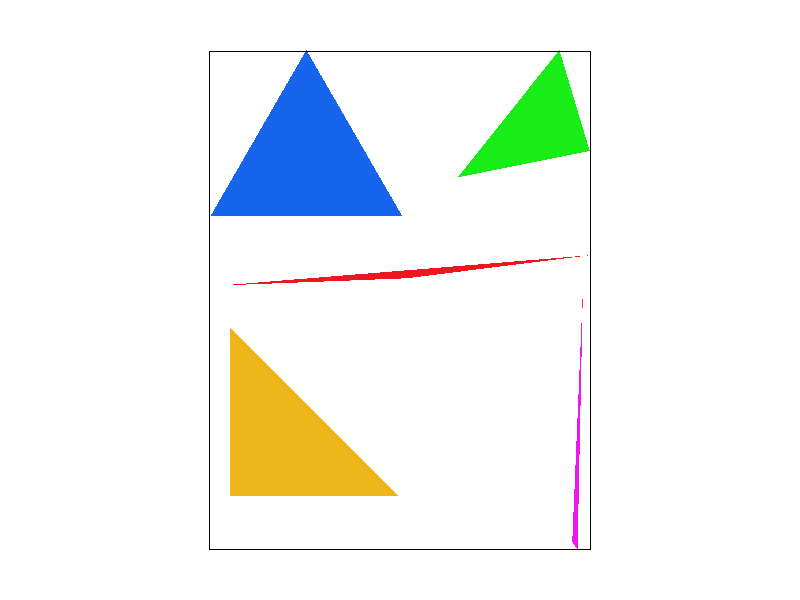
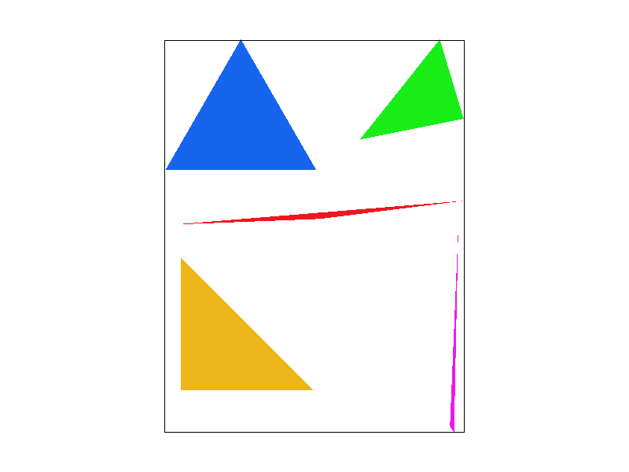
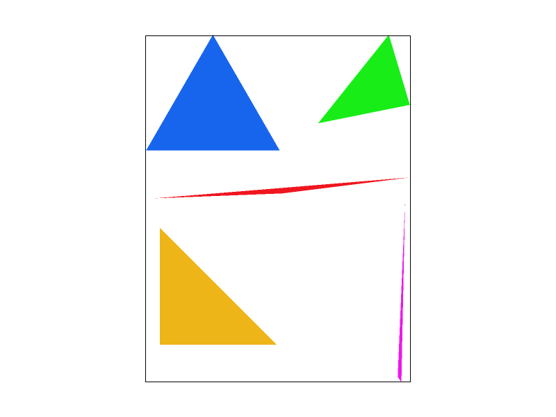
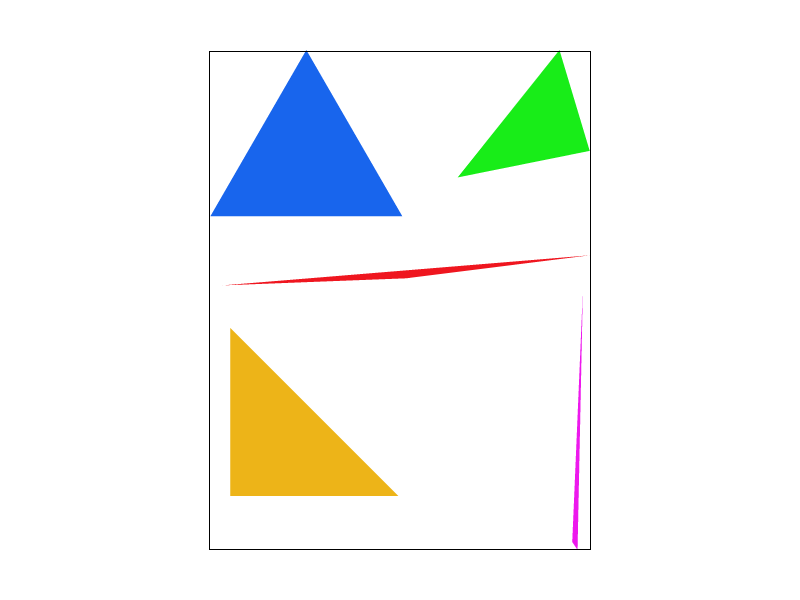
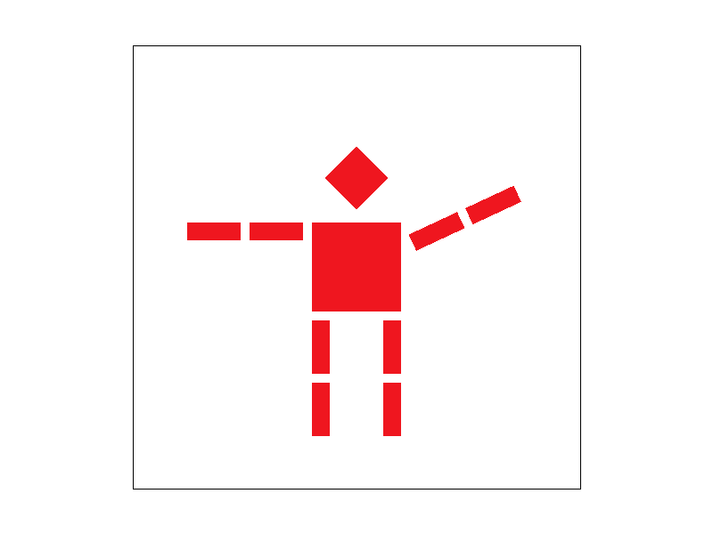
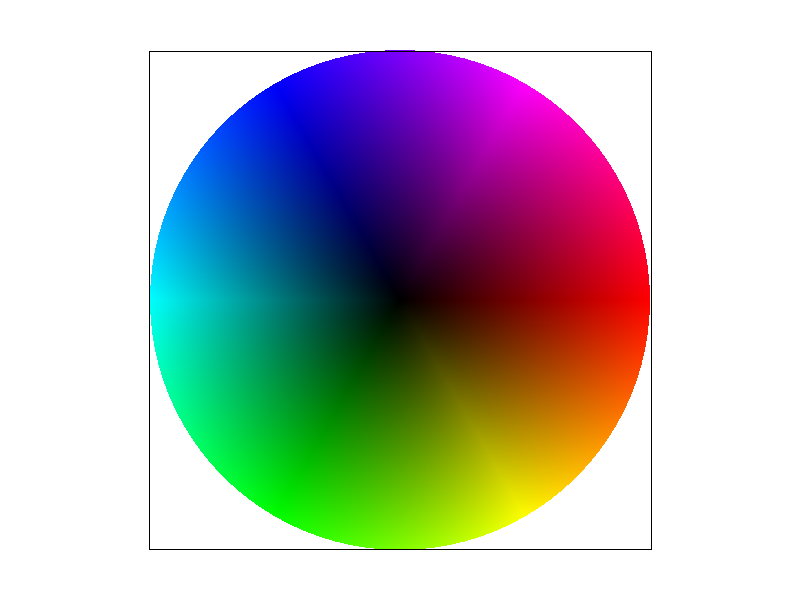
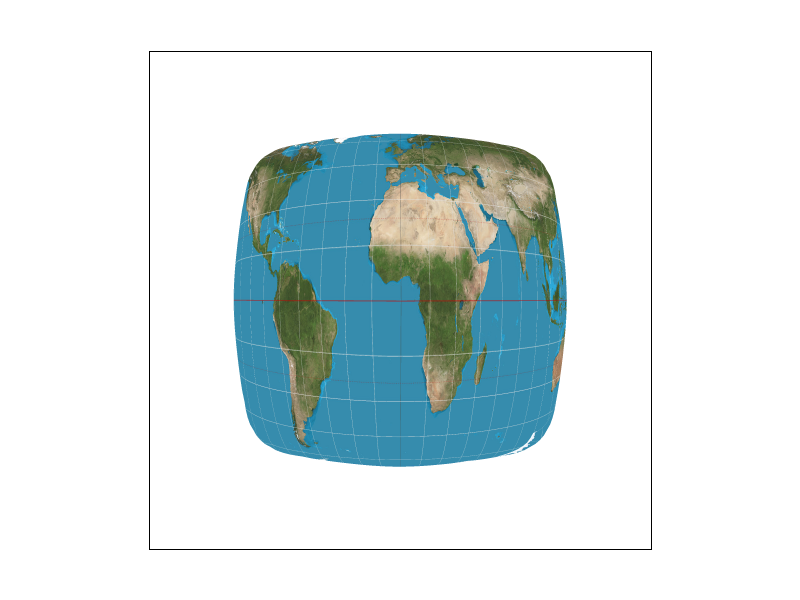
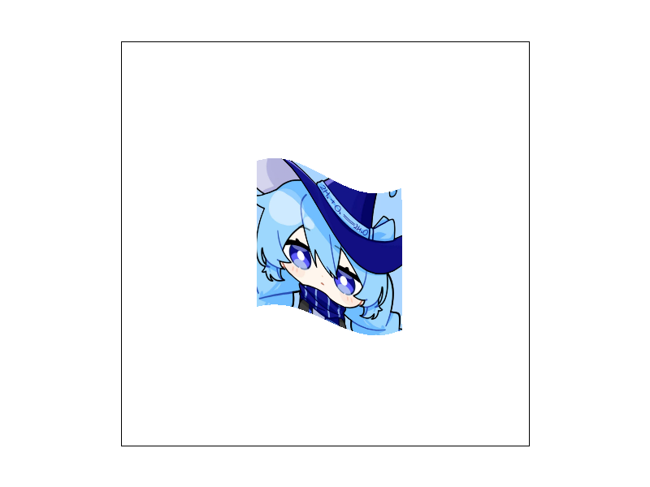

Name: Ruize Zheng | Webpage: https://cal-cs184-student.github.io/hw1-shiziku-h2o-writeup/
In this assignment I built a software triangle rasterizer that turns SVG drawings into pixels. I implemented triangle traversal with a bounding-box + point-in-triangle test, grid-based supersampling for antialiasing, 2D affine transforms, barycentric color interpolation, and texture mapping with nearest/bilinear pixel sampling and mipmap level sampling. The most interesting parts for me were seeing why every sampling decision is a tradeoff: supersampling and bilinear filtering both improve quality but cost memory/time, while mipmaps specifically solve minification aliasing in a very elegant, screen-space derivative based way.
A triangle is rasterized by first computing its bounding box in pixel coordinates, then testing
every sub-pixel sample inside that box against the triangle. For each candidate sample I compute
barycentric coordinates (alpha, beta, gamma); the sample is inside the triangle when
all three coordinates are non-negative. Boundary samples are kept, and the computation is
independent of vertex winding order. Because I only iterate over the bounding box (not the whole
framebuffer), the cost is proportional to the triangle's screen area rather than the full image;
another standard approach is per-edge line equations with a consistent sign test, which has the
same asymptotic cost. Points and lines are filled by fill_pixel.

basic/test4.svg, default viewing parameters.
Supersampling renders the scene at a higher resolution and downsamples it to the output
resolution. I keep a sample_buffer of size width * height * sample_rate,
where each output pixel owns a sqrt(sample_rate) x sqrt(sample_rate) grid of
sub-samples. Triangles fill individual sub-samples, while points and lines fill every sub-sample
of their pixel with the same color. After all primitives are rasterized,
resolve_to_framebuffer averages each pixel's sub-samples and converts the floating
color to 8-bit/channel frame-buffer values. At rate 1 edges are hard aliased; at 4 and 16 the
partial-coverage pixels blend toward the background, producing visibly smoother triangle edges.



I implemented 3x3 homogeneous matrices for translate, scale, and
rotate (degrees, counterclockwise). To make the cubeman more interesting I rotated
his right arm about the shoulder with transform="translate(90 -40) rotate(-25)" so
it waves upward, using the hierarchical transform structure already in robot.svg.

my_robot.svg — cubeman waving with his right arm.
Barycentric coordinates express any point inside a triangle as a weighted average of its three
vertices, p = alpha*p0 + beta*p1 + gamma*p2 with alpha+beta+gamma=1.
Each weight is the (signed) area of the opposite sub-triangle divided by the total triangle area,
so the weights are naturally interpolated across the surface. For vertex colors I compute the same
barycentric weights at each sample and blend the colors: c = alpha*c0 + beta*c1 + gamma*c2.
The color wheel below is basic/test7.svg at sample rate 1.

basic/test7.svg, sample rate 1.
Pixel sampling maps a continuous UV coordinate inside a triangle to a color in the texture.
Nearest-neighbor sampling picks the single nearest texel (floor(uv * size)), so it is
fast but blocky under magnification and noisy under minification. Bilinear sampling takes the four
surrounding texels around a shifted sample position and linearly blends them, giving smoother
filtering with only slightly more work. The four clips compare nearest vs. bilinear at 1 and 16
samples per pixel on svg/texmap/test1.svg.

Level sampling (mipmapping) pre-filters the texture into a pyramid of progressively smaller
images; at render time we choose a level whose texel density matches the screen pixel density.
My get_level computes texture-coordinate differences between the current sample and
samples one pixel to the right and above, scales those differences into texel space, then returns
log2(max(|dudx, dvdx|, |dudy, dvdy|)). sample then dispatches to
L_ZERO (always level 0), L_NEAREST (round to the closest level), or
L_LINEAR (blend the two surrounding levels; with P_LINEAR this is
trilinear filtering).
Tradeoffs: pixel sampling is cheapest but cannot fight minification aliasing; level sampling adds ~1/3 memory for mipmaps plus extra texel reads but removes minification shimmer; supersampling is the most general (it also antialiases geometry) but grows memory and time linearly with the sample count.

These four use my own generated texture 123.png (a fine concentric-ring pattern) mapped
through task6_zoneplate.svg. The far/minified regions of the snail-like grid alias badly
with L_ZERO; L_NEAREST picks a coarser mip level and largely removes that
moire, and bilinear pixel sampling smooths the remaining detail. As an extra comparison, trilinear
filtering (L_LINEAR + P_LINEAR) is shown below.